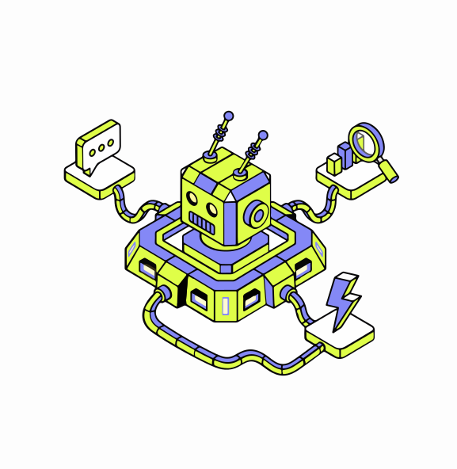

1. Phone Setup (Termux)
pkg update -y && pkg install -y git
git clone https://github.com/nicx17/androidimmichml.git
cd androidimmichml && chmod +x setup-phone.sh && ./setup-phone.sh
Distributed Machine Learning for Immich
Offload CLIP Smart Search, Facial Recognition, and OCR workloads to idle, unrooted Android smartphones using Termux and Debian PRoot.
Overview
Self-hosting Immich on a low-power NAS or mini-PC often causes CPU saturation and RAM exhaustion when indexing large photo libraries. androidimmichml turns decommissioned smartphones into a lightweight, remote machine learning cluster across your local network.
Quick Installation
1. Phone Setup (Termux)
pkg update -y && pkg install -y git
git clone https://github.com/nicx17/androidimmichml.git
cd androidimmichml && chmod +x setup-phone.sh && ./setup-phone.sh2. Workstation Fleet Start
git clone https://github.com/nicx17/androidimmichml.git && cd androidimmichml
cp .env.example .env && nano .env
./cluster-ctl.sh sync-env && ./cluster-ctl.sh startFor detailed parameter configuration and full step-by-step instructions, see the Setup Guide below.
Runs entirely in unprivileged Android user space using standard Termux and Debian PRoot. No bootloader unlocking, rooting, or voided device warranties.
Comment out the resource-intensive
immich-machine-learning container on your NAS or
mini-PC, eliminating server memory spikes and thermal
throttling.
Modern mobile ARM64 cores execute ONNX INT8 and FP32 operations with rapid efficiency, matching or outperforming low-power Celeron/Atom NAS CPUs.
Debian PRoot provides a standard glibc (manylinux)
environment where Astral uv syncs precompiled ARM64
wheels in seconds without local C++ compilation.
The included cluster-ctl.sh script coordinates
health checks, restarts, environment synchronization, and live
console logging across all devices via SSH.
Register multiple smartphone endpoints inside Immich Machine Learning settings for prioritized primary and secondary failover over your local Wi-Fi LAN.
Authentic pseudo-terminal execution from control workstation to Uvicorn.
cluster-ctl.sh sources local
.env parameters and communicates with phone
endpoints concurrently over SSH port 8022 with connection
timeout protection.
Acquires an Android wake-lock and allocates an authentic
/dev/pts/X PTY inside a detached
tmux session, avoiding PRoot pipe sanitization
errors.
Provides a standard glibc userland, applies
UV_LINK_MODE=copy to bypass SELinux link
restrictions, and sources /root/immich-ml.env.
Listens on port 3003, caches Hugging Face ONNX models in
/root/ml-cache, and processes Immich server
/predict requests with automatic crash respawn.
Hardware prerequisites for reliable continuous model inference.
| Component | Requirement | Details |
|---|---|---|
| Architecture | 64-bit ARM |
aarch64 / arm64-v8a (32-bit ARM is
unsupported).
|
| Physical RAM | 6 GB min / 8 GB+ rec. | Required to load CLIP, ArcFace, and OCR models concurrently without OOM triggers. |
| Flash Storage | 5 GB+ Free Space | Debian rootfs (~1.2 GB), virtualenv packages (~1.5 GB), and cached ONNX models (~2 GB). |
| Power & Battery | Continuous Power | Battery charge protection (capping at 80–85%) or bypass charging is strongly advised. |
You must turn off RAM Plus (or any "Memory Extension / Virtual Swap" feature) in your phone settings. Virtual RAM swaps active memory pages to internal UFS flash storage. During intense ONNX matrix operations, paging to flash causes severe I/O latency stalls, spikes CPU wait times, accelerates flash degradation, and triggers Android Low Memory Killer (LMK) paging storms.
Verified production hardware testbeds and tested machine learning models.
| Device | Physical RAM | Virtual RAM (RAM Plus) | Cluster Role | Status |
|---|---|---|---|---|
| Samsung Galaxy S20+ | 12 GB LPDDR5 | Disabled (Off) | Primary ML Node | Verified |
| Samsung Galaxy S21 FE | 8 GB LPDDR5 | Disabled (Off) | Failover Secondary Node | Verified |
Semantic Search
32-bit Model (ViT-B-32)
Full 32-bit embedding model for natural language photo and
concept indexing.
Biometric Clustering
antelopev2 Suite
InsightFace SCRFD face detection and ArcFace deep representation
embeddings.
Text Extraction
English Mobile Model
Lightweight RapidOCR mobile model optimized for text detection
and character recognition.
End-to-end setup instructions from initial phone provisioning to Immich server integration.
On each Android smartphone, install Termux from F-Droid or GitHub Releases (never use outdated Google Play builds). Set Termux Battery to Unrestricted in Android Settings. Then clone the repository and run the automated installer:
Run inside native Termux
pkg update -y && pkg install -y git
git clone https://github.com/nicx17/androidimmichml.git
cd androidimmichml
chmod +x setup-phone.sh
./setup-phone.sh
setup-phone.sh provisions a Debian
proot-distro container, installs Astral
uv, clones Immich at the configured tag, configures
UV_LINK_MODE=copy to bypass SELinux hardlink blocks,
syncs precompiled ARM64 CPU wheels without local C++ compilation,
and writes the auto-respawning
/root/start-ml.sh daemon wrapper.
After the installation script finishes, configure SSH access and ensure the Android Linux kernel does not suspend CPU execution when the screen turns off:
Run in native Termux
# 1. Set a password for remote SSH access
passwd
# 2. Prevent Android from sleeping the CPU during inference
termux-wake-lock
# 3. Start the OpenSSH daemon on port 8022
sshd
Find your phone's local IPv4 address in Android Settings (e.g.
Settings > Network & internet > Wi-Fi > IP
address, such as 192.168.0.210). Setting a DHCP reservation
on your Wi-Fi router is recommended. Repeat this on every phone
node in your cluster.
On your main workstation, control server, or PC, clone the repository and configure your cluster environment parameters:
Clone and initialize .env
git clone https://github.com/nicx17/androidimmichml.git
cd androidimmichml
# Create active environment configuration from template
cp .env.example .env
nano .env| Variable | Default | Description |
|---|---|---|
NODES |
"192.168.0.210 192.168.0.211" |
Space-separated list of phone SSH hostnames (from
~/.ssh/config) or LAN IPv4 addresses.
|
SSH_PORT |
8022 |
Termux OpenSSH listening port on your Android devices. |
IMMICH_VERSION |
"v3.4.1" |
Git tag of Immich to deploy. Must match your main immich-server version. |
ML_HOST |
"0.0.0.0" |
Bind address for Uvicorn inside Debian. |
ML_PORT |
3003 |
Port exposed by immich-ml for HTTP inference
requests.
|
MACHINE_LEARNING_CACHE_FOLDER |
"/root/ml-cache" |
Persistent directory inside Debian where downloaded Hugging Face ONNX models are stored. |
MACHINE_LEARNING_WORKERS |
1 |
Number of Uvicorn worker processes (keep at
1 on mobile devices to prevent RAM
exhaustion).
|
MACHINE_LEARNING_MODEL_TTL |
0 |
Model idle timeout in seconds (0 = keep in
RAM permanently; 300 = unload after 5m and
auto-respawn).
|
MACHINE_LEARNING_MODEL_INTRA_OP_THREADS
|
0 |
ONNX Runtime intra-op CPU threads (0 =
automatic; set to 2 or 4 to
limit heat).
|
Once you have saved your .env file, push the
parameters to all phone nodes over SSH:
Push .env to all cluster nodes
chmod +x cluster-ctl.sh
./cluster-ctl.sh sync-envFrom your workstation, launch and verify the cluster across all devices with one command:
Start and check health
# Start immich-ml in background tmux sessions across all configured NODES
./cluster-ctl.sh start
# Check HTTP /ping health across all NODES (verifies ONLINE status)
./cluster-ctl.sh status
cluster-ctl.sh starts a native Termux
tmux session that allocates a real
/dev/pts/X PTY before entering PRoot. This guarantees
that processes stay alive when you disconnect SSH and eliminates
PRoot pipe sanitization errors.
Direct your Immich server to your phone cluster and disable the heavy Docker ML container:
http://immich-machine-learning:3003 with
your primary phone endpoint:
http://192.168.0.210:3003.
http://192.168.0.211:3003.
2. Disable Docker ML container on main server
# In your server's docker-compose.yml, comment out the immich-machine-learning service block:
# immich-machine-learning:
# container_name: immich_machine_learning
# image: ghcr.io/immich-app/immich-machine-learning:${IMMICH_VERSION:-release}
# ...
# Recreate containers to apply changes
docker compose up -d --remove-orphansYour server will now route all facial recognition, Smart Search, and OCR jobs across your smartphone cluster.
Operations and syntax supported by cluster-ctl.sh.
Start Cluster
./cluster-ctl.sh startAcquires wake-lock and launches detached tmux sessions across all nodes.
Health Status
./cluster-ctl.sh statusProbes HTTP /ping endpoint on port 3003 with a 3-second timeout.
Restart & Sync Environment
./cluster-ctl.sh restartPushes updated .env variables, allows sockets to release, and respawns sessions.
Attach Console Logs
./cluster-ctl.sh logs 192.168.0.210Attaches to live Uvicorn console (press CTRL+B then D to detach).
Stop Cluster
./cluster-ctl.sh stopTerminates tmux sessions and releases Android wake-locks on all nodes.
Android SELinux prohibits link() syscalls inside
PRoot. Export UV_LINK_MODE=copy prior to syncing
dependencies with uv sync. This is handled
automatically in setup-phone.sh.
By default, uv sync installs development dependency
groups including locust and psutil.
Always supply --no-dev to avoid building
development packages.
ONNX Runtime probes Direct Rendering Manager devices at startup. Android blocks unprivileged access to DRM sysfs. This warning is completely harmless; inference safely executes on ARM64 CPU cores.
Immich ML defaults to a 300-second idle timeout
(MACHINE_LEARNING_MODEL_TTL=300). When the timeout
expires, it sends SIGINT to reclaim memory. Set
MACHINE_LEARNING_MODEL_TTL=0 to keep models in RAM,
or rely on the automatic respawn loop in
start-ml.sh.
PRoot requires an authentic pseudo-terminal. Always invoke PRoot
inside a native Termux
tmux session allocated via
TERM=xterm-256color tmux new-session -d rather than
executing PRoot directly over a raw SSH pipe.
On Android 12+, disable the Phantom Process Killer via ADB:
adb shell "/system/bin/device_config put activity_manager
max_phantom_processes 2147483647".